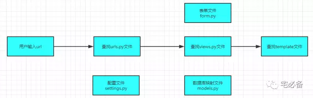

Django框架介绍
前不久我们介绍了使用Python进行日常的运维，包括监控Oracle,Linux等系统，并把获得的结果存入MySQL数据库
具体请看如下链接:
如果大家都有掌握这部分内容，就可以进阶一步，打造属于自己的一个监控系统
我们知道市面上有很多开源的监控系统，如zabbix，nagios等强大的工具
这些工具的强大之处不言而喻，不过越强大意味者我们可能使用不到那么多功能，而且虽然是开源，不过对大多数人来说阅读源码也有一定的难度
所以何不自己开发一套系统，按照自己的要求和需求来定制呢
由于我不是开发出身，是自学的Python，可能在语法，性能上有所欠缺，特别是惨不忍睹的Web界面，还请谅解，该专题主要是提供思路，如有不妥之处还请提出
开发环境
操作系统:CentOS 7.3
Python版本 :2.7
Django版本: 1.10.5(最新为1.11.3)
存储数据库:MySQL以及redis
数据分析:pandas
图表插件:highchart
Django介绍
熟悉Python的人对于Python的主流Web框架肯定有所了解，各有各的好处，Django可以说是其中最为强大和流行的一个，其官方文档非常详细，网上也有不少中文的文档，大家可现行了解
官方网站:
https://www.djangoproject.com/
ORM框架
Django采用ORM模型处理数据库关系
对象-关系映射（Object-Relational Mapping，简称ORM），简单来说就是通过面向对象的方法来映射后端数据库
在后面的实例中会有介绍，它通过 类(class)的方式定义关系型数据库的表结构
Django特性
Django 作为Web框架提供了一些非常有用的能够提升开发效率的特性
-
ORM模型简化和数据库层面的沟通，如表的建立及修改
-
强大的模板(template)功能，简化前端开发难度
-
form表单管理简化表单操作
-
集成了可视化管理数据库工具(admin)，免去了安装插件等动作
Django Web请求过程
接下来简单介绍一下Django如何处理用户的Web请求，以及一些常用的文件的说明 
-
首先用户输入url后,django会查找urls.py文件，找到与之对应的函数
-
urls.py对应的函数在views.py会有明确的定义，views相当于后端
-
views.py可能会调用template(模板)文件，用户在前端显示
-
model.py即前面所说的ORM模型，将数据库表定义写在该文件中
-
form.py为表单文件，Django同样提供了一套管理表单的方法
-
settings.py为配置文件，里面包含IP访问控制，插件配置以及数据库连接配置等信息
今天介绍了使用Django建立网站前的一些概念，下节将介绍如何搭建网站